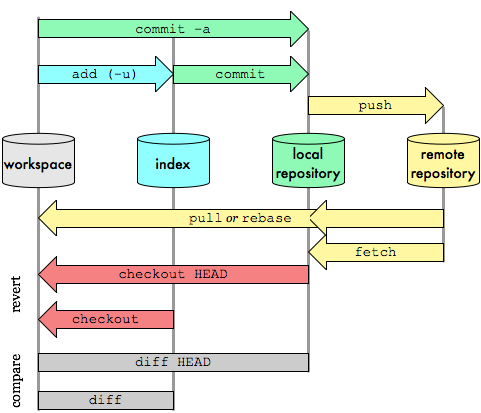

P1.1 Introducción a git y GitHub
¿Qué vas a aprender en este taller?
- Recordar el uso de git para realizar el control de versiones de los proyectos.
- Configurar una cuenta en GitHub, servicio que nos ofrece repositorios remotos.
- Recordar el ciclo de vida de la gestión de nuestros repositorios: creación, clonación, sincronización, ... y nuestros ficheros: creación, modificación, borrado.
Conceptos previos de git
Git es un sistema de control de versiones distribuido ampliamente utilizado que permite a los desarrolladores rastrear y gestionar cambios en el código fuente de proyectos de software. Permite la colaboración efectiva en equipos, facilita el seguimiento de revisiones, la gestión de ramas de desarrollo y la reversión a versiones anteriores del código, lo que lo convierte en una herramienta esencial para el desarrollo de software colaborativo y la gestión de proyectos.
Para gestionar un proyecto con git crearemos un directorio en el que diremos a git que "controle" el estado de los distintos archivos que creemos en dicho directorio. Diremos que ese directorio es un "Repositorio git".
En un repositorio git existen distintas secciones, que podemos entender como "lugares" donde pueden estar los archivos. Además, cada archivo puede estar en distintos estados en función de la sección en que se encuentren. Veamos ambos conceptos.
Secciones principales de un repositorio git
En un repositorio git podemos diferenciar las siguientes secciones:
- Workspace
- Staging area (Index)
- Local repository
- Remote repository

Figura 1: Imagen de Oliver Steele.
Estados de un archivo en git
Un archivo puede estar en alguno de los siguientes estados:
- Sin seguimiento (untracked)
- Preparado (staged)
- Modificado (modified)
- Confirmado (commited)
El siguiente diagrama muestra en qué sección se puede encontrar cada archivo en función de su estado.
+-------------+ +-------------+ +-------------+ +-------------+
| Workspace | | Staging | | Local | | Remote |
| | | Area | | Repository | | Repository |
+------+------+ +------+------+ +------+------+ +------+------+
| | | |
| | | |
Untracked | | |
| | | |
Modified Staged Commited |
| | | |
| | | |
| | | |
+ + + +
Para consultar el estado de los archivos usamos el comando:
Este comando es muy usado ya que es fundamental conocer el estado de los archivos de nuestro repositorio.
Utilizando distintos comandos podemos pasar los archivos de una sección a otra y cambiar su estado. A continuación veremos los comandos básicos que nos permitirán una utilización básica de git usando como repositorio remoto GitHub.
¿Qué tienes que hacer?
-
Crea una cuenta en GitHub (Si no la tienes!!!). La forma de acceder a los repositorios remotos de GitHub va a ser por SSH, por lo tanto debes copiar tu clave pública RSA a GitHub, para ello:
- Genera una par de claves ssh, como hicimos en una práctica anterior. Puedes usar la que creaste entonces si quieres.
- Ve a GitHub - Settings - "SSH and GPG keys".
- Crea una `New SSH Key".
- Copia el contenido de tu fichero
~/.ssh/id_rsa.puby pega el contenido de tu clave pública.
-
Crea en GitHub un repositorio con el nombre prueba_tu_nombre (inicializa el repositorio con un fichero README) y la descripción Repositorio de prueba de Nombre.
-
Instala git en tu ordenador (si no lo tienes instalado!!!).
-
Configuración de git. Lo primero que deberías hacer cuando instalas Git es establecer tu nombre de usuario y dirección de correo electrónico (Asegurate que los datos son correctos y que has puesto tu nombre completo). Esto es importante porque las confirmaciones de cambios (commits) en Git usan esta información, y es introducida de manera inmutable en los commits que envías:
De nuevo, sólo necesitas hacer esto una vez si especificas la opción
--global, ya que Git siempre usará esta información para todo lo que hagas en ese sistema. -
Clonar el repositorio remoto. Copia la url SSH del repositorio (no copies la URL https) y vamos a clonar el repositorio en nuestro ordenador. Sitúate en un directorio, dentro del cual quieras clonar el repositorio remoto.
Comprueba que dentro del repositorio que hemos creado se encuentra el fichero README.md, en este fichero podemos poner la descripción del proyecto.
Comprueba también que existe un directorio .git que contiene todos los ficheros que git utiliza para gestionar el proyecto.
-
Vamos a crear un nuevo fichero, lo vamos a añadir a nuestro repositorio local y luego lo vamos a sincronizar con nuestro repositorio remoto de GitHub. Cada vez que hagamos una modificación en un fichero lo podemos señalar creando un commit. Los mensajes de los commits son fundamentales para explicar la evolución de un proyecto. Un commit debe ser un conjunto pequeño de cambios de los ficheros del proyecto con una cierta coherencia. Comprueba tras cada comando git el estado y área donde se encuentra el archivo con git status.
echo "Esto es una prueba">ejemplo.txt git add ejemplo.txt git status git commit -m "He creado el fichero ejemplo.txt" git status git pushComprueba ahora en el repositorio remoto de GitHub que se ha subido el fichero ejemplo.txt y los comentarios del commit.
-
Si modificas un fichero en tu repositorio local, pasará al área "workspace" y estado "modificado". Vamos a probarlo.
Comprueba como te dice que el fichero ejemplo.txt esta en estado modificado.
-
Ahora podríamos pasarlo al àrea "stage" nuevamente con
git add ejemplo.txto pasarlo directamente al "Repositorio local" congit commit -a. Por rapidez usaremos esta última forma. Fíjate que usaremos siempre-mpara incluir un comentario descriptivo a cada commit.Note
El git status que realizamos tras cada comando no es necesario. Símplemente lo hacemos para ir aprendiendo los distintos estados y áreas por las que pasa el fichero.
-
Si quieres cambiar el nombre de un fichero o directorio de tu repositorio:
-
Si quieres borrar un fichero de tu repositorio:
-
Puedes comprobar el historial de commits del proyecto así
-
Para finalizar comprueba en GitHub el historial de commits.